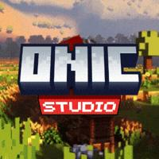

Website hướng dẫn cần JavaScript để mở mục lục và nội dung. Bạn có thể đọc tài liệu nguồn tại
GitHub SolarShop Docs
.
Đi đến nội dung

Onic
/ wiki
Tìm tài liệu
/
GitHub ↗
VI
EN
Onic Wiki
/
Trang chủ